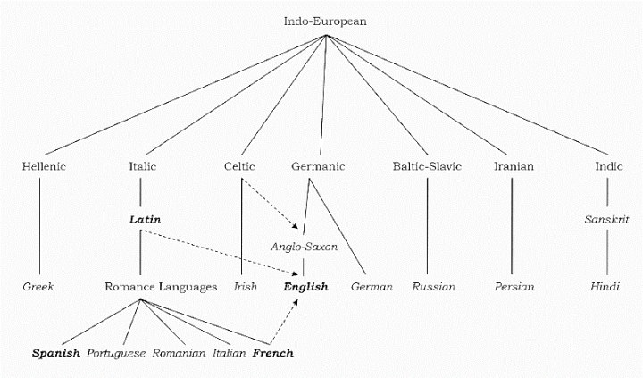
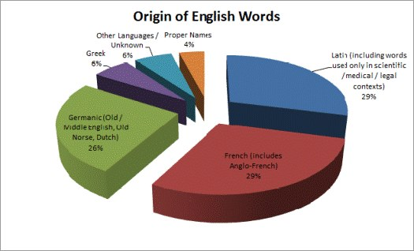
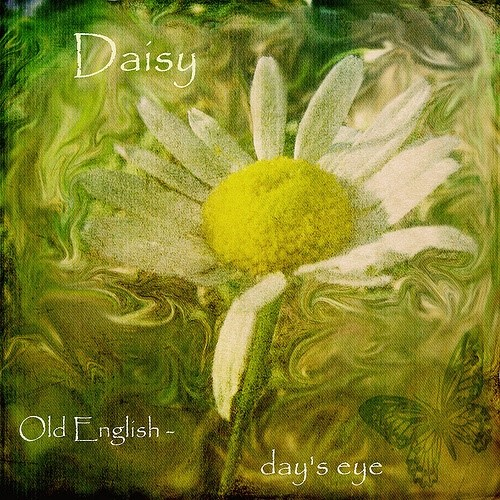

通往云端的词汇大厦
张誉膑（北京大学中文系2012本）
每当我蜷缩在幽暗的小屋拿起一本词汇书，准备继续焚膏继晷地苦背英语单词时，总期盼着能有一股新生力量助我构建一栋直冲霄汉的词汇大厦。终于有一天，云英语（Y-English.org）出现了，这栋通往云端的词汇大厦拔地而起。（请参见百度百科）
我在学习云英语VB词汇建造师(Vocabulary Builder)之前，常常感觉学习英语的时间越长，进步反而越来越困难，就像被困在伸手不见五指的小屋，迷惘无解。确实，非母语者到了英语学习后期，如果仍沿用大学英语课那种死板套路，英语水平往往在原地打转，尤其是词汇量与词汇能力构成瓶颈，制约了学术阅读能力的提升。而目前市面上的各种词汇书又是各种粗制滥造，只是机械罗列单词和汉译，对词汇学习帮助不大。暑假我学了一个月VB词汇建造师后，终于走出了词汇学习的僵局，英语能力和语言学素养都有明显提升。
云英语究竟是靠什么新生力量将词汇大厦修上云端的呢？词汇大厦的地基主要有三块——历史比较语言学(historical comparative linguistics)、原始印欧语(Proto-Indo-European)和词源学(etymology)。历史比较语言学，以历史比较法为基础，研究语言之间的亲属关系，比如英语和德语的关系。原始印欧语，即PIE(Proto-Indian-European Languages)，是后世语言学家根据印欧语系诸语(比如拉丁语、古希腊语和德语)，透过历史比较语言学的方法所重构的假想语言。词源学(etymology)是研究词汇的历史和演化的学问。从词源上讲，etymology来自古希腊语etumologia，可拆解成etymon(true)+logia，即探究词之真意。
那原始印欧语对英语学习究竟有什么帮助呢？这就需要从英语的历史说起。粗略来说，英语源于原始日耳曼语，本身属于日耳曼语族，而日耳曼语族是印欧语系的一个分支。（图1-英语在印欧语系中的位置）
（图1，英语在印欧语系中的位置）
英语的基础词汇大部分属于日耳曼语，比如go和come等简单词，我们中学时学的大多数词汇都是日耳曼语的。历史上，1066年法国诺曼底公爵征服英格兰，法语成为不列颠岛的统治语言。随后几百年间，大量法语词汇渗入英语中。而法语本身属于拉丁语的后代子语言，后者还包括我们熟悉的西班牙语和意大利语。另外，英语还直接从拉丁语和古希腊语中借用了大量词汇，特别是学术词汇。简而言之，英语词汇主要有日耳曼语、拉丁(法语)和古希腊语三大来源，最终来源是PIE。（图2-英语词汇的构成）
（图2-英语词汇的构成）
基于PIE框架，或者具体点说，借助原始印欧语词基(PIE roots)，英语词汇中的拉丁、希腊和日耳曼成分可以被系统地关联起来，构成英语词汇大厦的砖石。比如PIE的*gwei-=to live，核心含义是"活着，有生命的"。从*gwei-到它衍生的拉丁词根、希腊词根和日耳曼词根，中间会经历有规律的系统的语音变迁(常见的语音变化规律就几条，无需死记硬背)。*gwei-在拉丁语中演变为vita，vivus，相应地我们可以关联的英语词汇有vital，vitamin，vivid，vivify，revive和survive等；*gwei-在古希腊语中演变为bios，zoion，对应的英语同源词有biology，biography、zoo和zoology；至于*gwei-的日耳曼后代，常见的有quick。有一句短语叫所谓的the quick and the dead，其中的quick并不是"快"的意思，而是表示"活着的"，"快"是"活着的，有活力"的引申义。
以上说的是从PIE词基*gwei-到具体英语单词的过程。同时，我们还可以从常见的具体单词出发，回溯到PIE词基，并且将已知词汇跟未知的同源词建立关联。比如我们学习ocular这个词时，通过查阅AHD《美国传统词典》，知道ocular这个词的含义大概是"眼睛的、和眼睛有关的"，然后梳理它的词源，知道它来源于拉丁语oculus(眼睛)，最终源自PIE词基*okw-=to see。对应的希腊同源词有optics(光学)、myopia(近视)和synopsis(syn+opsis一起看à概观总览)等；常见的日耳曼同源词有eye(眼睛，古英语形式为ēage)，ogle(色眯眯地看)，daisy(雏菊，古英语形式为d?gesēage =day's eye缩合而来)。至于雏菊为啥词源义是"日之眼"(day's eye)，直接看图不解释。
（图3，日之眼）
授课过程中，主讲人李浩老师深入浅出地梳理了单词与单词之间的历史联系，运用各种生动形象的方式解说英语单词，并辅以各类百科知识和生活常识，将词汇学习变成一件轻松而有趣的事。
第一，现实场景有助于深刻理解词汇的内涵和使用语境,所以李浩老师经常将英语词汇和具体现实背景结合来讲。例如，讲到ordain表示授予神职这个意思时，李老师介绍了很多基督教的背景知识，特别是教会的组织架构，梳理Pope，Cardinal、Archbishop、Bishop、Priest的词源和所指，将学习者带入单词背后的广义文化语境，这对于深刻理解以及精确使用这个单词有很大的裨益。
第二，李浩老师基于自己深厚的跨学科学术背景，将各种百科知识和词汇典故一并讲解。最神奇的是古希腊罗马神话，比如太阳神Apollo和大蟒蛇Python的典故；最长姿势的是医学知识，比如癔症hysteria怎么回事，我们口语常说的歇斯底里就源于此词。我印象最深的一个单词是protean，它的词根proto-来源于古希腊语，指的是"最初、第一"。希腊神话中有一个叫作普罗特斯(Proteus)的海神，这个神能任意改变自己的外形，并且擅长寓言。因此，protean的词义就是"(像海神一样)变化多端或者多才多艺"。另外，有一个医学术语"普罗特斯综合征"(Proteus Syndrome)，也和Proteus的典故有关。普罗特斯综合征患者在童年时期会从看似相对正常的体型，迅速转变成令人吃惊的超级肥胖体型，这就像Proteus迅速改变自己的形状一样，因此这种病被命名为Proteus Syndrome。
第三，在词与词之间建立关联，是李浩老师经常强调要灵活掌握和运用的一个重要方法论。最基本的关联是同源词关联。比如prudent，机械拆解词根词缀的人可能会误以为prudent=prud-ent，而回溯词源才发现，prudent在拉丁语时写作providens=pro(before, in advance)-vid(see)-ens(ing)=forseeing，不过今天的prudent并不表示"预见"，而是由"预见"引申指"小心谨慎精明节俭"，其背后线索是由于预见未来(可能出现不好的结果)而在当下提前做好准备，由此不难理解provide为什么可以表示"预防"，provident为什么可以表示"为将来做好准备的"和"节俭的"。俗语有个词，叫做未雨绸缪，说的也是这个理。
以上是我在学习VB过程中的一些心得，水平有限，文中若有说得不对或不严谨的地方，还请大神指正。最后，祝愿大家能充分利用英语词源，最终建成属于自己的通向云端的英语词汇大厦！
源自：http://blog.renren.com/blog/479777626/935289638